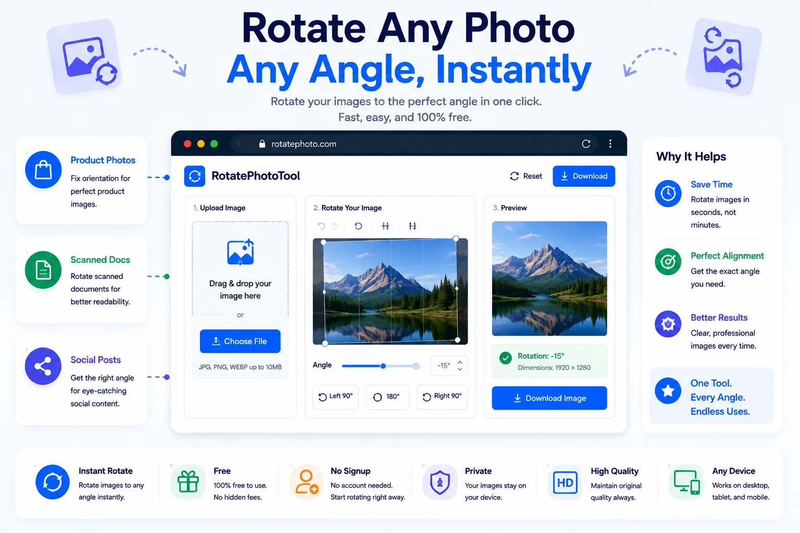

How to Rotate an Image Online Without Losing Quality

A photo taken sideways, a scanned document that came out upside down, a screenshot that needs flipping before it's usable, these are everyday annoyances that shouldn't require opening a full photo editor. The problem is that rotating an image the wrong way, or through the wrong tool, can quietly degrade its sharpness every time it's saved.
This guide covers why images end up sideways in the first place, how to rotate one without losing quality, and how to do it for free using NexaTools.
Why Photos End Up Sideways
Most sideways photos aren't actually stored sideways, they're stored with an orientation flag in the image's metadata (called EXIF data) that tells software how to display them correctly. Phones save the raw sensor data in one fixed orientation and then rely on this flag to rotate it visually. When that metadata is stripped, ignored, or misread, for example after uploading to certain platforms or older editing tools, the image displays sideways even though nothing about the actual pixels changed.
Step-by-Step: Rotate an Image with NexaTools
- Open the NexaTools Image Rotator
- Upload the image that needs rotating
- Choose a 90°, 180°, or 270° rotation, or set a custom angle
- Download the rotated image at full original quality
Common Mistakes That Cause Quality Loss
- Repeated re-saving in JPEG every time a JPEG is rotated and re-saved through a lossy process, compression artifacts compound
- Rotating a screenshot instead of the source file working from a lower-resolution screenshot instead of the original image locks in unnecessary quality loss
- Ignoring EXIF orientation manually rotating an image that already displays correctly because of its EXIF flag can result in it appearing sideways elsewhere
- Using a heavy editor for a simple fix a full photo editor with layered exports and recompression is overkill for a plain orientation fix
Who Needs an Image Rotator
- Anyone fixing sideways phone photos before sharing or printing
- Students and professionals correcting scanned document orientation
- Online sellers preparing product photos for a marketplace listing
- Social media managers adjusting images before posting
🔄 Rotate Your Image Free
No signup, no limits. Upload your photo and rotate it instantly.
⚡ Open Image Rotator